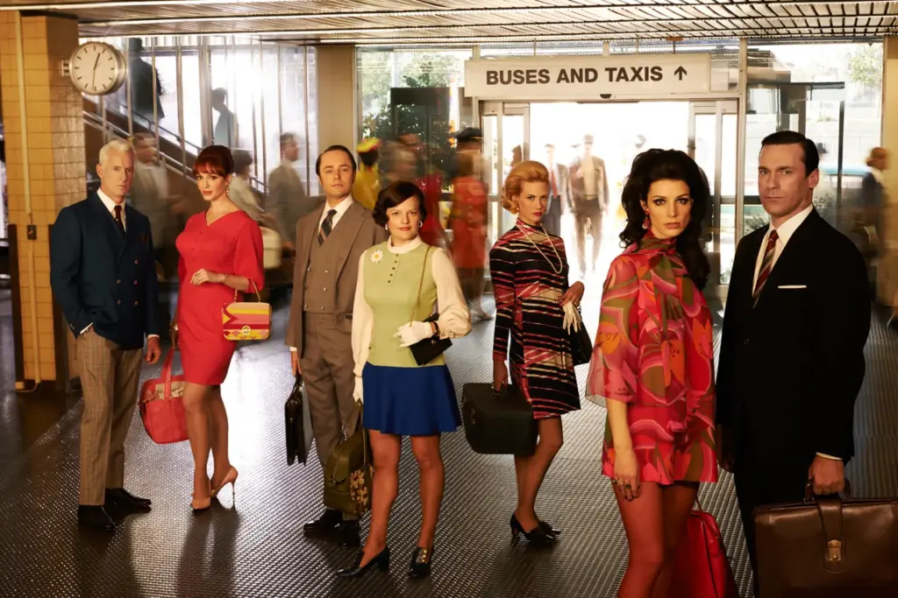

.jpg) |
Forest Gump2sa20dk/Komedi, Dram, RomantikYönetmen:Robert Zemeckis Oyuncular:Tom Hanks, Gary Sinise, Robin Wright Forrest Gump, düşük I.Q. sahibi genç bir adamdır. Jenny ile tanıştığında ona aşık olur. Gump aralarında Elvis Presley, Kennedy, Nixon’ın da olduğu tarihsel kişilerle kaza eseri tanışır ve 50’lerden 70’lerin sonuna kadar gelen bir süre zarfında olaylar gelişir.
|
|  | Oggusto2sa10dk/Dram, Trajedi Yönetmen:Paul Thomas AndersonOyuncular:Dniel Day-Lewis, Paul Dano, Ciaran Hinds Paul Thomas Anderson’ın yönetmenlik dehasını doruklara taşıdığı “There Will Be Blood,” Amerikan rüyasının karanlık yüzünü, açgözlülüğün ve inancın çarpışmasını anlatan bir başyapıt. Upton Sinclair’in “Petrol!” adlı romanından serbestçe uyarlanan film, 20. yüzyılın başlarında California’da petrol avcılığı yapan hırslı Daniel Plainview’in yükselişini ve düşüşünü izlerken, kapitalizmin insan ruhunda açtığı tahribatı gözler önüne seriyor. |
 |
Shutter Island3sa5dk/Gerilim, Gizem, DramYönetmen:Martin Scorsese Oyuncular:Leonardo DiCaprio, Emily Mortimer, Mark Ruffalo Martin Scorsese’nin gerilim ve gizemi birleştirdiği “Shutter Island,” izleyiciyi son sahnesine kadar zihinsel bir labirentte sürükleyen, hafızalara kazınan bir modern klasik. Dennis Lehane’in aynı adlı romanından uyarlanan neo-noir psikolojik gerilim, 1954 yılında, akıl hastası suçluların tutulduğu Shutter Adası’ndaki Ashecliffe Hastanesi’nden bir hastanın kayboluşunu araştırmak üzere adaya gelen Federal Şerif Teddy Daniels’ın hikayesini anlatıyor. Adaya adım attığı andan itibaren, Teddy’nin gerçeklik algısı, kabuslarla, paranoyayla ve geçmişin hayaletleriyle sarsılmaya başlar. |